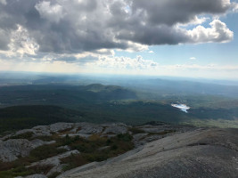
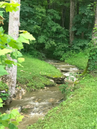
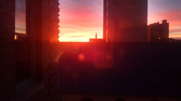

Monadnock Summit
I was born and raised in north central Massachusetts, within driving distance of New Hampshire's Mount Monadnock.
Kentucky Stream
I lived in Kentucky for a year as a volunteer with Christian Appalachian Project. There are many sights more beautiful than this in the region, but this stream brings back a lot of memories as it was located near the house I was living in.
Milwaukee Sunset
I lived in Milwaukee while I was in graduate school. This was the view from my apartment on a particularly colorful evening.